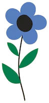
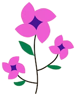
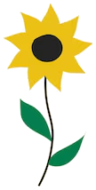
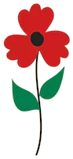

Buzz-worthy fun facts
Bees are tiny, but they do giant things. Flip the cards, take a peek inside the hive, and find out what would happen to our world if bees disappeared.
Did you know?
Guess the answer, then tap a card to flip it.

Inside the hive
A hive is a busy bee base where everyone has a job. Here's what goes on inside.
- 👑The queencan lay up to 2,000 eggs in a single day.
- 🐝A big familyA strong hive can hold 20,000 to 60,000 bees in summer.
- 🌡️Always 35 °CBees warm the nursery by shivering and cool it by fanning their wings.
- ⬡Perfect shapesHexagon cells hold the most honey using the least wax.
- 🧹Jobs by ageYoung bees clean and feed babies, then build, guard, and finally fly out.
- ⏳Short livesSummer bees live about 6 weeks. Winter bees can live for months.
- 💧Water carriersOn hot days bees bring water home to cool the hive down.

What if bees went extinct?
Bees aren't the only pollinators, but they're the most important ones. Without them, our plates and our planet would look very different.
Your shopping basket
- 🍎Apples
- 🌰Almonds
- 🫐Blueberries
- 🍒Cherries
- 🥑Avocados
- 🍉Watermelons
- 🥒Cucumbers
- 🎃Pumpkins
- 🍓Strawberries
- ☕Coffee
- 🍯Honey
- 🍞Bread
- 🍚Rice
- 🌽Corn
- 🥔Potatoes
- 🍌Bananas
Press the button to see what happens without bees.
- Far fewer fruits and vegetables About 3 out of 4 kinds of food crops need pollinators, at least partly, to grow well.
- Food gets expensive What's left becomes rare, so prices for fruit, nuts and vegetables would shoot up.
- Less healthy meals We'd still have bread and rice, but lose many vitamins. One study (The Lancet, 2015) estimated that losing all pollinators could cause about 1.4 million extra deaths a year from poorer diets.
- Farm animals go hungry too Clover and alfalfa, important food for cows, are pollinated by bees. Less of them means less milk and meat.
- Wild nature suffers Nearly 9 in 10 wild flowering plants need animals to pollinate them. Birds and animals that eat their berries and seeds would lose their food.
- People would have to be the bees In parts of China, farmers already pollinate apple and pear trees by hand, flower by flower. It's slow, tiring and very expensive.
How you can help
- 🌸Plant flowers, herbs or a little wildflower patch, even on a balcony.
- 🚫Skip pesticides in your garden.
- 💧Put out a shallow dish of water with pebbles for thirsty bees.
- 🏠Hang up a bee hotel for wild solitary bees.
- 🍯Buy honey from local beekeepers.
- 🙋Come and help at one of our bee bases: plant, build and meet the bees!